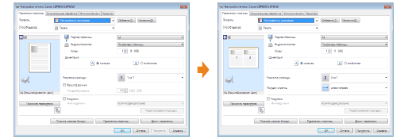
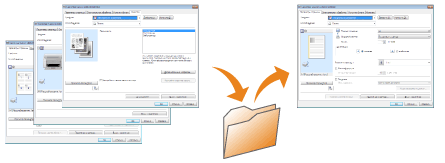

Измените настройки печати, установленные по умолчанию, которые применяются ко всем данным.
Например, если часто выполнять печать с разметкой, нет необходимости каждый раз изменять значения параметров путем изменения значений по умолчанию для параметра [Разметка страницы].

Несколько часто используемых настроек печати можно сохранить как "Профили". После этого можно выполнять печать с зарегистрированными параметрами, выбрав необходимый профиль.
Кроме того, некоторые параметры, поддерживающие различные задания, зарегистрированы как профили по умолчанию.
